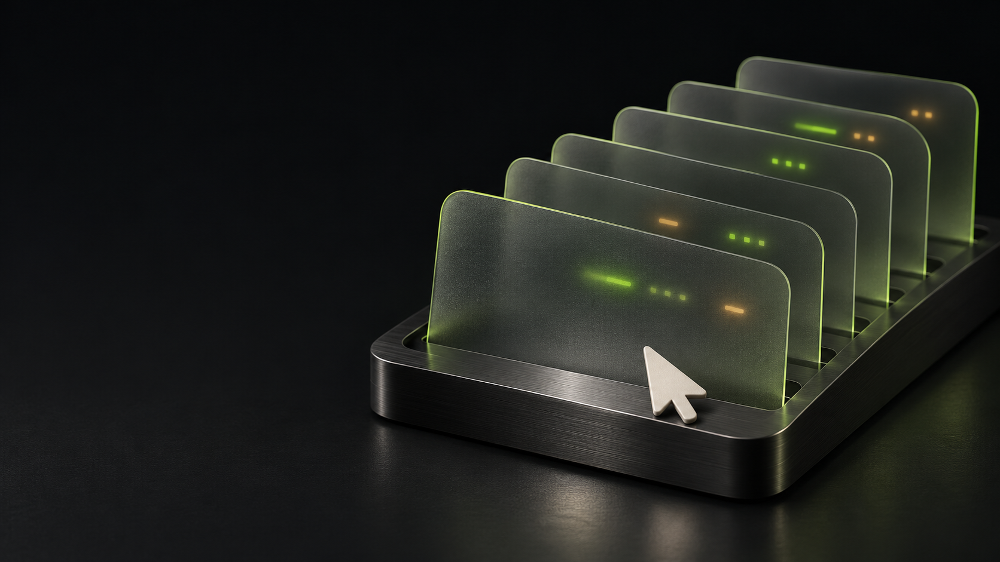

No pointer fights.
App interfaces do the work. The tool never reaches for your physical mouse or global keyboard.
Give your agent access to your apps.
Keep your screen, your mouse, and your flow.

Traditional screen automation shares your input devices.
StillDesk talks to the app through a background interface.
The outline is almost ready.
One more sentence, then coffee.
App interfaces do the work. The tool never reaches for your physical mouse or global keyboard.
The browser extension uses Native Messaging. No remote debugging port or debugger permission.
A missing background action returns a capability error. It never quietly switches to a foreground bot.
One entry point. Different native backends.
Capabilities are specific, and visible.
Read, navigate, fill forms, and transfer files through a browser extension.
Local history, search, images and verified cached attachments. Background-first reads.
Account-scoped local history and image access. Structured records with stable cursors.
Official service operations through the authenticated Feishu CLI. No window automation.
Background meeting records and local transcript workflows. Capture starts only on request.
Native is a method.
Transparency is the promise.
Use the CLI, add an MCP server, or export a client configuration.
Each integration lists what has actually been checked.
Clone the repository, prepare the native bridge, then add the tools to your agent.
Read the setup guide →* Claude Code compatibility is checked statically; project tests do not launch Claude Code. Exported configuration is not a claim of live testing in every harness.